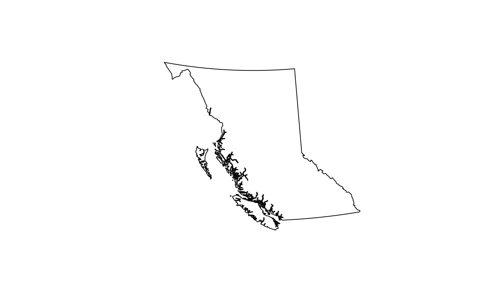
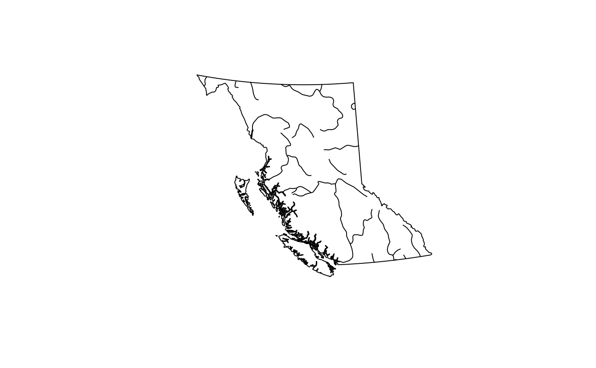
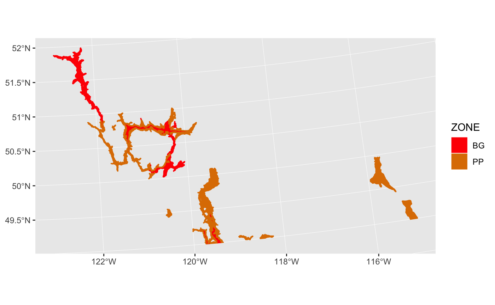

Overview
An R package of spatial map layers for British Columbia.
Features
Provides access to various spatial layers of British Columbia, such as administrative boundaries, natural resource management boundaries, watercourses etc. All layers are available in the BC Albers projection, which is the B.C. Government standard as sf or Spatial objects.
Layers are stored in the bcmaps.rdata package and loaded by this package, following the strategy recommended by Anderson and Eddelbuettel.
Installation
You can install bcmaps from CRAN:
To install the development version of the bcmaps package, you need to install the remotes package then the bcmaps package.
Usage
To get full usage of the package, you will also need to install the bcmaps.rdata package, which holds all of the datasets.
Note that unlike most packages it is not necessary to actually load the bcmaps.rdata package (i.e., with library(bcmaps.rdata)) - in fact it is less likely to cause problems if you don’t.
To see the layers that are available, run the available_layers() function:
library(bcmaps)
#> Loading required package: sf
#> Linking to GEOS 3.6.1, GDAL 2.1.3, PROJ 4.9.3
available_layers()
#> layer_name
#> 1 airzones
#> 2 bc_bound
#> 3 bc_bound_hres
#> 4 bc_cities
#> 5 bc_neighbours
#> 6 ecoprovinces
#> 7 ecoregions
#> 8 ecosections
#> 9 gw_aquifers
#> 10 hydrozones
#> 11 municipalities
#> 12 nr_areas
#> 13 nr_districts
#> 14 nr_regions
#> 15 regional_districts
#> 16 water_districts
#> 17 water_precincts
#> 18 watercourses_15M
#> 19 watercourses_5M
#> 20 wsc_drainages
#> 21 bec
#> 22 tsa
#> title
#> 1 British Columbia Air Zones
#> 2 BC Boundary
#> 3 BC Boundary - High Resolution
#> 4 BC Major Cities Points 1:2,000,000 (Digital Baseline Mapping)
#> 5 Boundary of British Columbia, provinces/states and the portion of the Pacific Ocean that borders British Columbia
#> 6 British Columbia Ecoprovinces
#> 7 British Columbia Ecoregions
#> 8 British Columbia Ecosections
#> 9 British Columbia's developed ground water aquifers
#> 10 Hydrologic Zone Boundaries of British Columbia
#> 11 British Columbia Municipalities
#> 12 British Columbia Natural Resource (NR) Areas
#> 13 British Columbia Natural Resource (NR) Districts
#> 14 British Columbia Natural Resource (NR) Regions
#> 15 British Columbia Regional Districts
#> 16 British Columbia's Water Management Districts
#> 17 British Columbia's Water Management Precincts
#> 18 British Columbia watercourses at 1:15M scale
#> 19 British Columbia watercourses at 1:5M scale
#> 20 Water Survey of Canada Sub-Sub-Drainage Areas
#> 21 British Columbia BEC Map
#> 22 B.C. Timber Supply Areas & TSA Blocks
#> shortcut_function local
#> 1 TRUE TRUE
#> 2 TRUE TRUE
#> 3 TRUE TRUE
#> 4 TRUE TRUE
#> 5 TRUE TRUE
#> 6 TRUE TRUE
#> 7 TRUE TRUE
#> 8 TRUE TRUE
#> 9 TRUE TRUE
#> 10 TRUE TRUE
#> 11 TRUE TRUE
#> 12 TRUE TRUE
#> 13 TRUE TRUE
#> 14 TRUE TRUE
#> 15 TRUE TRUE
#> 16 TRUE TRUE
#> 17 TRUE TRUE
#> 18 TRUE TRUE
#> 19 TRUE TRUE
#> 20 TRUE TRUE
#> 21 TRUE FALSE
#> 22 TRUE FALSE
#>
#> ------------------------
#> Layers with a value of TRUE in the 'shortcut_function' column can be accessed
#> with a function with the same name as the layer (e.g., `bc_bound()`),
#> otherwise it needs to be accessed with the get_layer function.
#>
#> Layers with a value of FALSE in the 'local' column are not stored in the
#> bcmaps.rdata package but will be downloaded from the internet and cached
#> on your hard drive.Most layers are accessible by a shortcut function by the same name as the object. Then you can use the data as you would any sf or Spatial object. For example:

Alternatively, you can use the get_layer function - simply type get_layer('layer_name'), where 'layer_name' is the name of the layer of interest. The get_layer function is useful if the back-end bcmaps.rdata package has had a layer added to it, but there is as yet no shortcut function created in bcmaps.
library(sf)
library(dplyr)
ws <- get_layer("wsc_drainages", class = "sf")
plot(ws["SUB_SUB_DRAINAGE_AREA_NAME"], key.pos = NULL)
Simple Features objects
By default, all layers are returned as sf spatial objects:
library(bcmaps)
library(sf)
# Load and plot the boundaries of B.C.
bc <- bc_bound()
plot(st_geometry(bc))
## Next load the Regional Districts data, then extract and plot the Kootenays
rd <- regional_districts()
kootenays <- rd[rd$ADMIN_AREA_NAME == "Regional District of Central Kootenay", ]
plot(st_geometry(kootenays), col = "lightseagreen", add = TRUE)
Spatial (sp) objects
If you aren’t using the sf package and prefer the old standard sp way of doing things, set class = "sp" in either get_layer or the shortcut functions:
library("sp")
# Load watercourse data and plot with boundaries of B.C.
plot(get_layer("bc_bound", class = "sp"))
plot(watercourses_15M(class = "sp"), add = TRUE)
It’s a beautiful day in the neighbourhood
A handy layer for creating maps for display is the bc_neighbours layer, accessible with the function by the same name:
library(ggplot2)
ggplot() +
geom_sf(data = bc_neighbours(), mapping = aes(fill = name)) +
geom_sf(data = bc_cities())
Biogeoclimatic Zones
As of version 0.15.0 the B.C. BEC (Biogeoclimatic Ecosystem Classification) map is available via the bec() function, and an accompanying function bec_colours() function to colour it:
# This example requires ggplot2 3.0.0 or greater, which has the
# `geom_sf()` function (see https://ggplot2.tidyverse.org/reference/ggsf.html):
bec <- bec()
library(ggplot2)
ggplot() +
geom_sf(data = bec[bec$ZONE %in% c("BG", "PP"),],
aes(fill = ZONE, col = ZONE)) +
scale_fill_manual(values = bec_colors()) +
scale_colour_manual(values = bec_colours())
Vignettes
We have written a short vignette on plotting points on one of the layers from bcmaps. You can view the vignette online here or if you installed the package you can open it using browseVignettes("bcmaps").
Utility Functions
The package also contains a couple of handy utility functions:
-
fix_geo_problems()for fixing invalid topologies insforSpatialobjects such as orphaned holes and self-intersections -
transform_bc_albers()for transforming anysforSpatialobject to BC Albers projection. -
self_union()Union aSpatialPolygons*object with itself to remove overlaps, while retaining attributes
Getting Help or Reporting an Issue
To report bugs/issues/feature requests, please file an issue.
How to Contribute
Pull requests of new B.C. layers are welcome. If you would like to contribute to the package, please see our CONTRIBUTING guidelines.
Please note that this project is released with a Contributor Code of Conduct. By participating in this project you agree to abide by its terms.
Source Data
The source datasets used in this package come from various sources under open licences, including DataBC (Open Government Licence - British Columbia) and Statistics Canada (Statistics Canada Open Licence Agreement). See the data-raw folder for details on each source dataset.
Licence
# Copyright 2017 Province of British Columbia
#
# Licensed under the Apache License, Version 2.0 (the "License");
# you may not use this file except in compliance with the License.
# You may obtain a copy of the License at
#
# http://www.apache.org/licenses/LICENSE-2.0
#
# Unless required by applicable law or agreed to in writing, software distributed under the License is distributed on an "AS IS" BASIS,
# WITHOUT WARRANTIES OR CONDITIONS OF ANY KIND, either express or implied.
# See the License for the specific language governing permissions and limitations under the License.This repository is maintained by Environmental Reporting BC. Click here for a complete list of our repositories on GitHub.